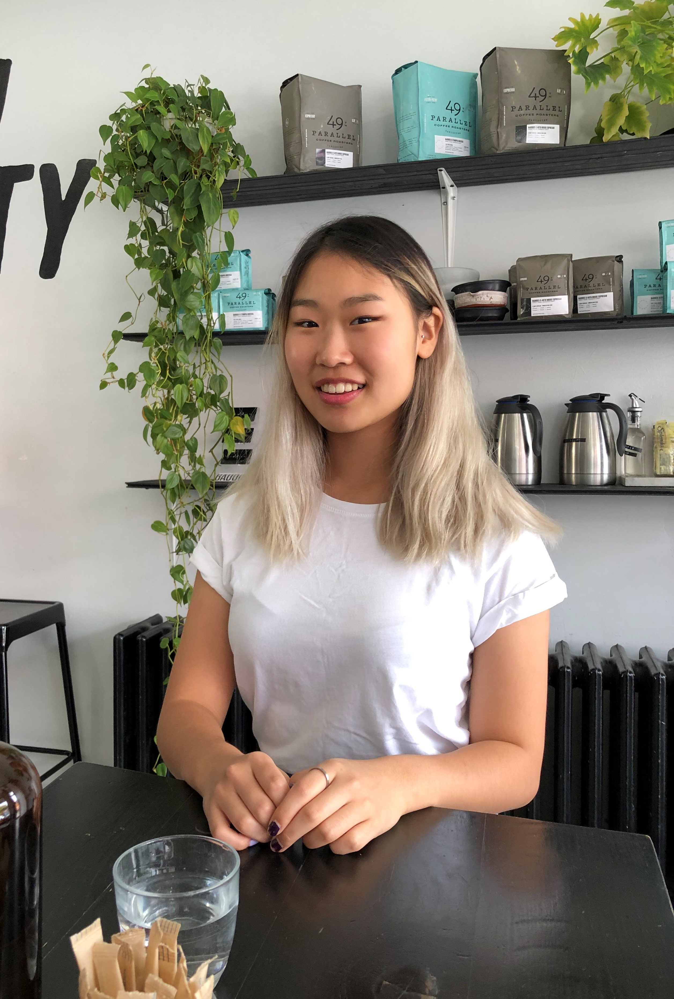

My name is Jennifer Chung
I'm currently a first-year Biomedical Engineering student at the University of Waterloo with a high interest in UI/UX design, human factors engineering, and entrepreneurship
Ever since high school, I've been interested in engineering, the act of building and designing a device to improve the health and well-being of others
Ingredients to make a: Jennifer
- 1/2 cup of team player
- 1/4 cup of endless curiosity
- 1/4 cup of cheerfulness
- 3 tbsp of avid gaming
- 2 tbsp of music-enthusiast
- 1 tsp of sleep deprived
